Tutorial: Intel Quartus Prime Lite (VHDL-based FPGA Design Flow)#
- Intel Quartus Prime Lite and Available Editions
- Installation of Quartus Prime Lite on Ubuntu 24.04
- Creating a New Quartus Project
- Adding Source Code Files
- FPGA Pin Assignments
- Full FPGA Compilation Process
- Device Programming
- VHDL Simulation Using Questa Intel Starter Edition
- Output Signal Measurement
Intel Quartus Prime Lite and Available Editions#
To design and implement logic circuits using Intel / Altera FPGA devices or boards, Intel Quartus Prime software is essential. It is a comprehensive design software suite that provides an IDE (Integrated Design Environment), supporting the entire design process — from initial design entry to final device configuration.

Figure: Intel / Altera FPGA Design Flow using Quartus Prime
Editions of Intel Quartus Prime:#
There are three main editions of Intel Quartus Prime:
- Lite Edition: This free version provides essential compilation and programming capabilities for a limited selection of low-cost Intel FPGA devices. It's well suited for educational purposes and smaller projects.
- Standard Edition: This edition supports a broader range of Intel FPGA devices but requires a paid license.
- Pro Edition: Designed for Intel's latest and highest-performance FPGAs (such as Agilex, Stratix 10, and Arria 10), this edition offers advanced features and is not free.
For most lab environments, the Lite Edition is sufficient, offering all the necessary tools to get started with FPGA development on compatible devices.
The software is available only for Windows and Linux. As of May 2025, the latest version of Intel Quartus Prime Lite is v24.1. The Lite Edition may require up to 14 GB of hard disk storage.


Figure: Comparisons of three different versions of Intel Quartus Prime

Figure: Quartus Prime Standard vs. Pro Edition
For the lab, the following free software tools are required:
- Quartus Prime Lite Edition
- Questa-Intel Starter Edition (for HDL-based simulation)
It is recommended to use the Intel Quartus Prime Installer for the installation process. In addition, Questa-Intel FPGA Starter Edition is available for free, but it does require a license file (.dat).
Follow the instructions on this page: Intel License Guide to obtain and use a license file.
Installation of Quartus Prime Lite on Ubuntu 24.04#
For Linux users: The following section explains how to install Quartus Prime Lite Edition v24.1std on an Ubuntu 24.04 system.
After downloading the .run installer from the Intel website,
make it executable and then run it:
$ chmod +x *.run
$ ./qinst-lite-linux-24.1std-1077.run
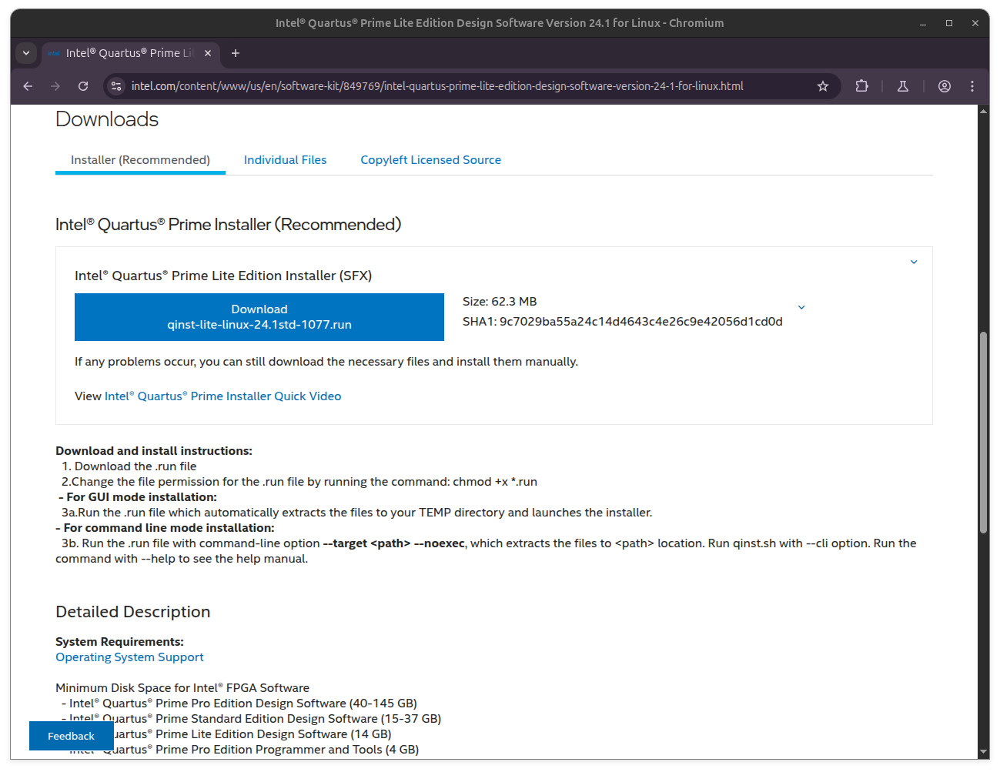
Figure: Download the Intel Quartus Prime Installer (for Linux)
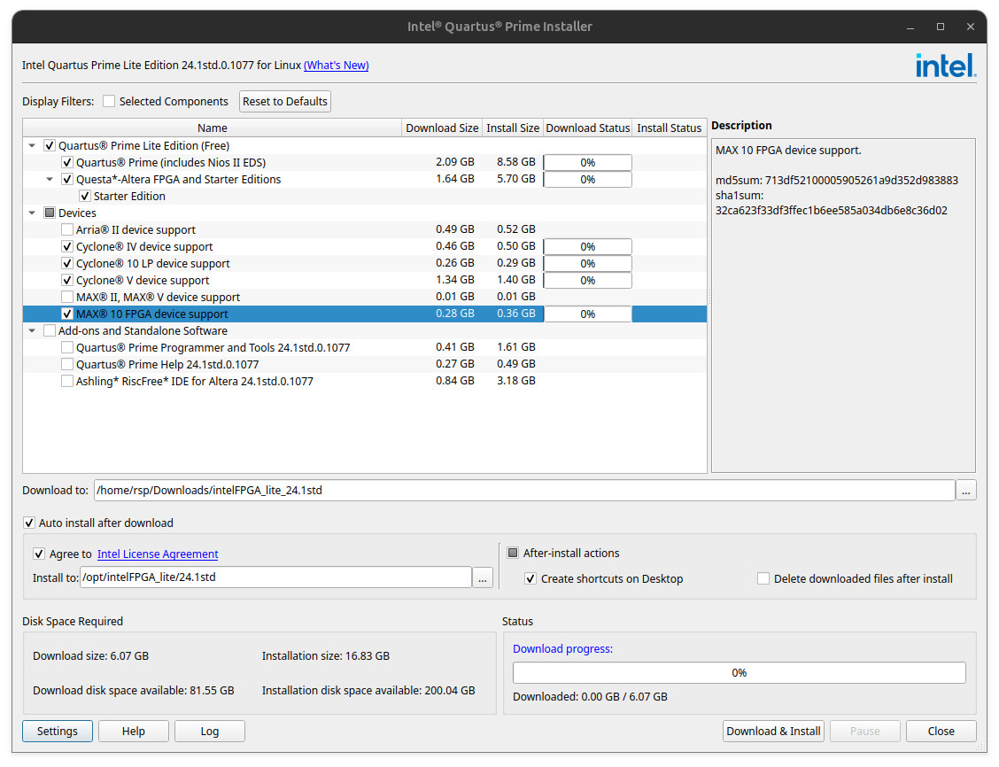
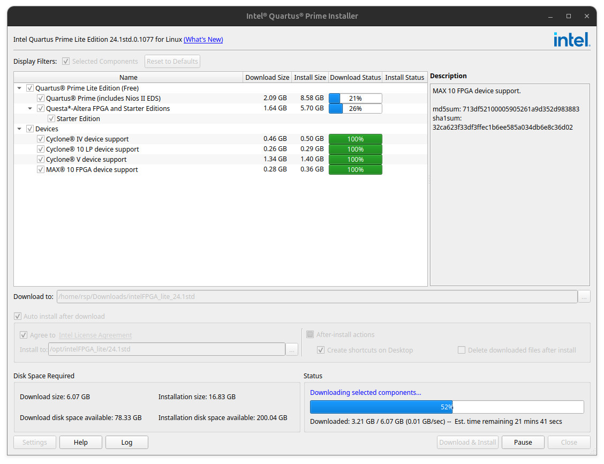
Figure: Installation steps (Make sure your computer is connected to the internet.)
Creating a New Quartus Project#
Follow these steps to create and configure a new project:
-
Launch Intel Quartus Prime Lite software and start a New Project
- Go to File > New Project Wizard to begin the project setup.
-
Specify Project Information
- Choose a directory for project files.
- Enter a name for the project.
- Define the name of the top-level design entity.
-
Select Project Type
- Choose Empty Project.
-
Add Source Files (Optional)
- If VHDL or Verilog source files are provided, add them at this step.
- Otherwise, click Next to skip this step.
-
Select Target Device
- In the device selection tab, choose:
- Family:
MAX 10 - Device:
10M50DAF484C7G
- Family:
- You can use the Filter options to locate the device more easily.
- In the device selection tab, choose:
-
Change EDA Tool Settings
- Accept the default settings and click Next.
-
Finish the Project Wizard
- Review the settings and click Finish to create the project.

Figure: The main window of Intel Quartus Prime Lite (v22.1, Linux version / Ubuntu 22.04)

Figure: Start "New Project Wizard".
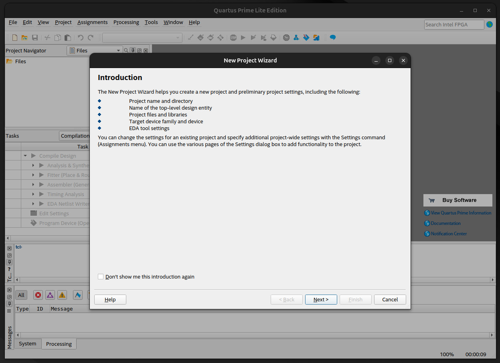
Figure: Overview of the "New Project Wizard" steps.
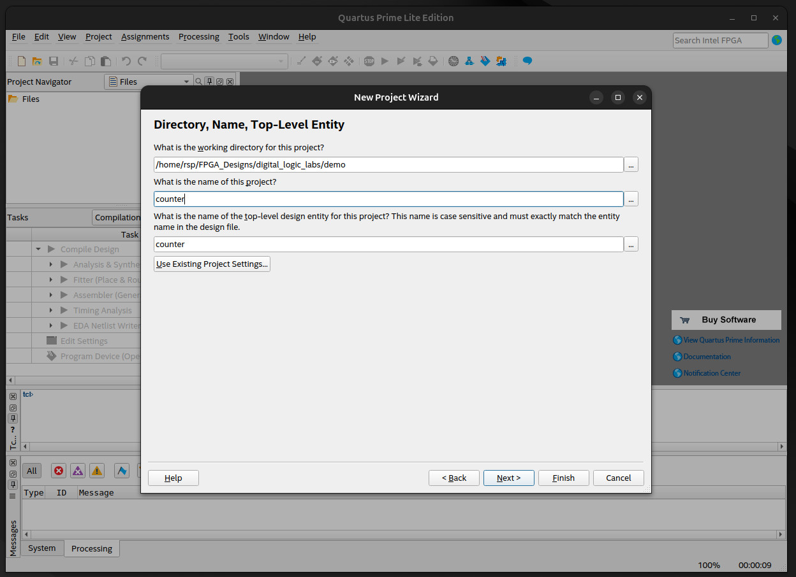
Figure: Select the project directory, set the project name, and specify the name of the top-level design entity.
Note: In this tutorial, VHDL source code for a binary counter (named counter),
along with a VHDL testbench (named tb_counter), is used as an example.
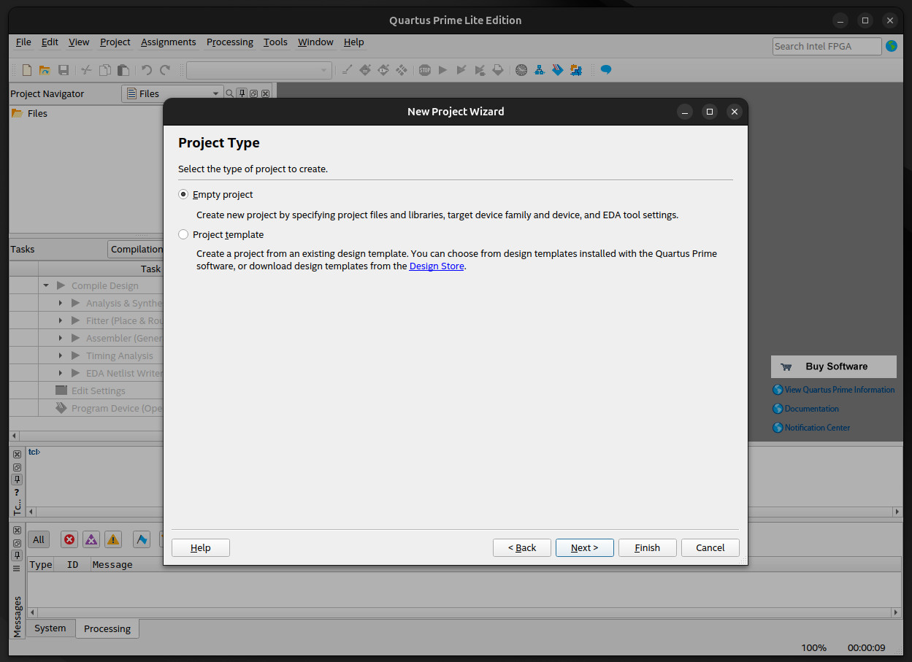
Figure: Choose "Empty Project" as the project type.
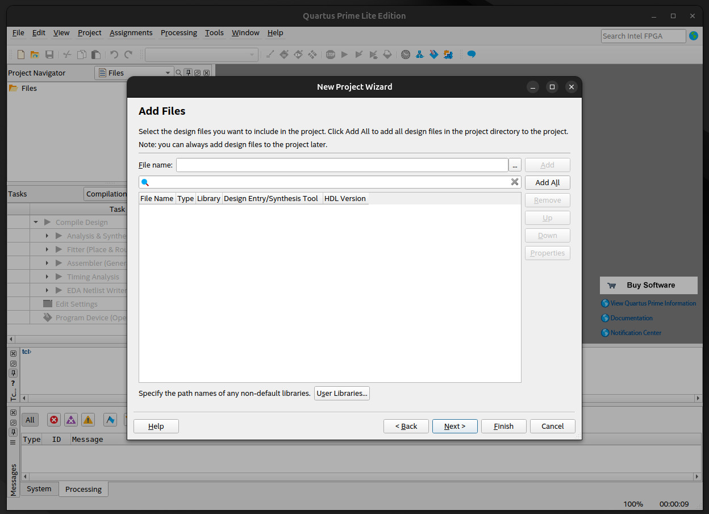
Figure: Add existing VHDL files if any. Otherwise, skip this step.
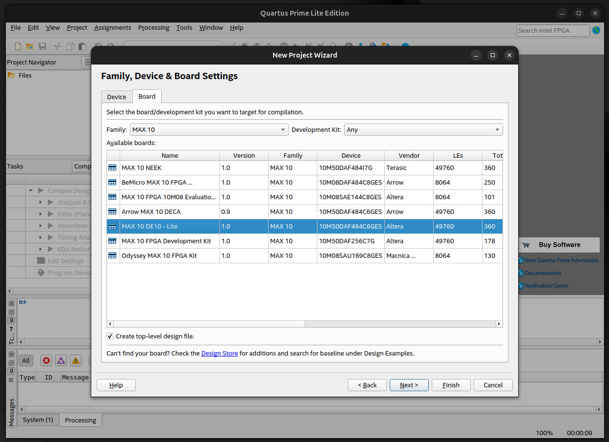
Figure: Choose the FPGA device by selecting a supported FPGA board (MAX10 DE10 Lite)

Figure: Alternatively, choose the FPGA device explicitly by selecting it from the drop-down menus (10M50DAF484C7G: MAX10 family, DA Series, 50K logic elements,
484 Pins, Commercial Speed Grade -7).
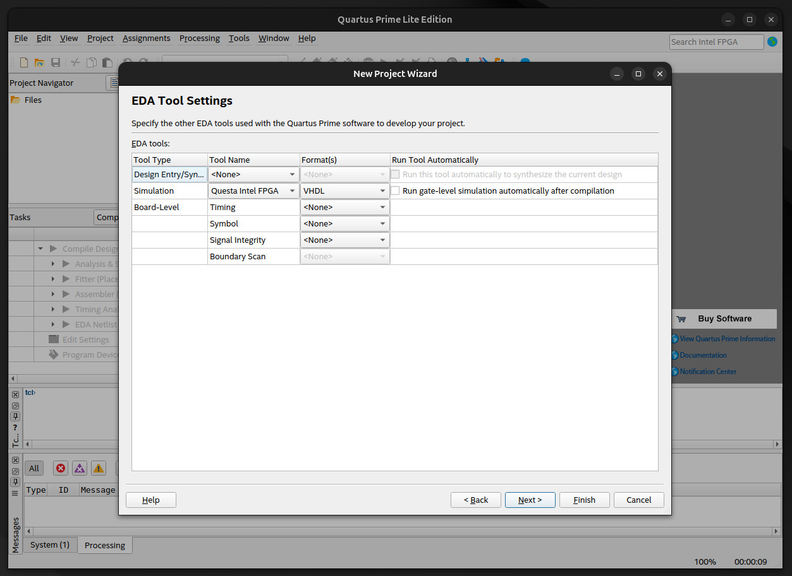
Figure: Use the default "EDA Tool Settings" (use VHDL files for simulation).
Adding Source Code Files#
After a new project is created successfully, the next step is to create and add new files for the VHDL source code and FPGA pin assignments to the project.
-
Adjust Project Navigator View
- In the main window, switch the Project Navigator view from Design Hierarchy to Files for better file management.
-
Add a New HDL File
- Go to File > New, select VHDL File, and click OK.
- Enter VHDL source code and save the file with a
.vhdextension. - Right-click the file in the Project Navigator and choose Add to Project.
- Make sure that the name of the top-level design matches the name of the main VHDL entity.

Figure: Create a new file. Choose the VHDL file type.
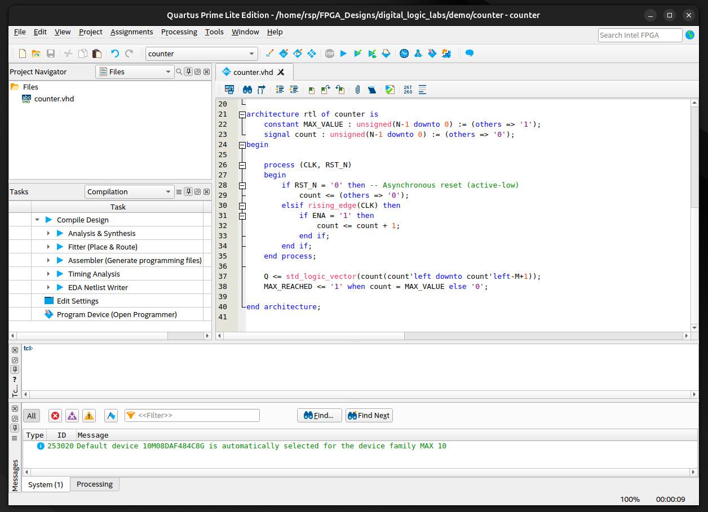
Figure: Paste the example VHDL code into the .vhd file, then save the file.
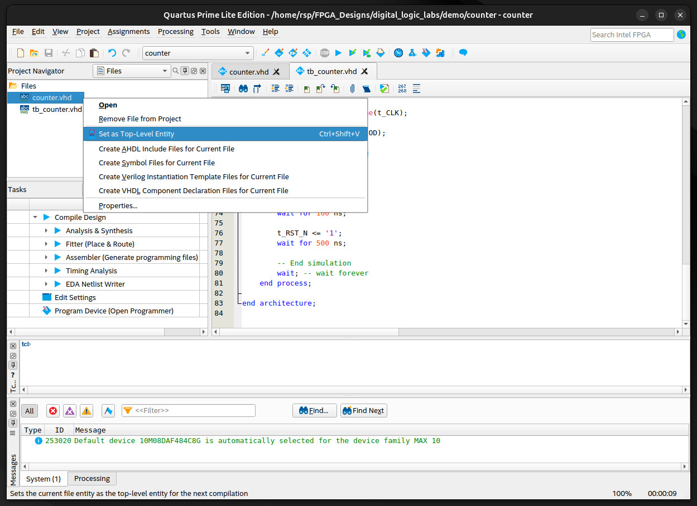
Figure: Right-click the VHDL file in the "Project Navigator" and select "Set as Top-Level Entity".

Figure: In the "Project Settings" tab, choose VHDL 2008 as the VHDL version. The default VHDL standard is VHDL-1993.

Figure: Right-click the VHDL file in the "Project Navigator" and click "Analyze Current File" to perform a VHDL syntax check.

Figure: Choose "Processing > Start > Start Analysis & Synthesis" to perform the logic synthesis step to ensure that the VHDL source code is synthesizable.
The following code listings are provided for the counter entity and its testbench.
-- File: counter.vhd
LIBRARY IEEE;
USE IEEE.STD_LOGIC_1164.ALL;
USE IEEE.NUMERIC_STD.ALL;
ENTITY counter IS
GENERIC (
N : INTEGER := 24; -- Default bit width of the binary counter
M : INTEGER := 10 -- Default bit width of output
);
PORT (
CLK : IN STD_LOGIC; -- Clock
RST_N : IN STD_LOGIC; -- Asynchronous active-low reset
ENA : IN STD_LOGIC; -- Enable input
Q : OUT STD_LOGIC_VECTOR(M - 1 DOWNTO 0); -- M-bit output
MAX_REACHED : OUT STD_LOGIC -- High when counter reaches max value
);
END ENTITY;
ARCHITECTURE rtl OF counter IS
CONSTANT MAX_VALUE : unsigned(N - 1 DOWNTO 0) := (OTHERS => '1');
SIGNAL count : unsigned(N - 1 DOWNTO 0) := (OTHERS => '0');
BEGIN
PROCESS (CLK, RST_N)
BEGIN
IF RST_N = '0' THEN -- Asynchronous reset (active-low)
count <= (OTHERS => '0'); -- Reset the counter.
ELSIF rising_edge(CLK) THEN
-- Increment the counter by 1 on each clock cycle when enabled.
IF ENA = '1' THEN
count <= count + 1;
END IF;
END IF;
END PROCESS;
-- Extracts the upper M bits from the N-bit counter and
-- converts them to a STD_LOGIC_VECTOR format.
Q <= STD_LOGIC_VECTOR(count(count'left DOWNTO count'left - M + 1));
-- Sets MAX_REACHED to '1' when the counter reaches its maximum value,
-- otherwise '0'.
MAX_REACHED <= '1' WHEN count = MAX_VALUE ELSE '0';
END ARCHITECTURE;
Here are the key descriptions for the VHDL counter design:
-
Usage of VHDL Generics
N(Default: 24): Defines the bit width of the internal binary counter. This allows flexibility in adjusting the counter size without modifying the core logic.M(Default: 10): Specifies the bit width of the output signalQ.Mmust be less than or equal toN.
-
I/O Interface
- Inputs:
CLK: Clock signal used for synchronous logic design.RST_N: Asynchronous active-low reset signal, used to reset the counter.ENA: Enable signal; when high ('1'), the counter increments.
- Outputs:
Q: A M-bit output derived from the most significant bits of the counter.MAX_REACHED: A status flag that becomes high ('1') when the counter reaches its maximum possible value.
- Inputs:
The following VHDL testbench is used to verify the functionality of a counter module by simulating clock cycles, reset behavior, and enable conditions.
- Clock Generation: A periodic process creates a 20 ns clock signal (50MHz).
- Device Under Test (DUT): Instantiates the counter entity with generic bit-width parameters (
NandM). - Stimulus Process:
- Apply an initial reset (
RST_N= 0). - Enable counting (
ENA= 1), then disables it after a fixed duration. - Re-enable counting, tests reset conditions again.
- Use a wait statement to keep the simulation running indefinitely.
- Apply an initial reset (
-- File: tb_counter.vhd
LIBRARY IEEE;
USE IEEE.STD_LOGIC_1164.ALL;
USE IEEE.NUMERIC_STD.ALL;
ENTITY tb_counter IS
END ENTITY;
ARCHITECTURE testbench OF tb_counter IS
CONSTANT N : INTEGER := 8; -- Set to a small value for easier simulation
CONSTANT M : INTEGER := 8;
-- DUT signals
SIGNAL t_CLK : STD_LOGIC := '0';
SIGNAL t_RST_N : STD_LOGIC := '0';
SIGNAL t_ENA : STD_LOGIC := '0';
SIGNAL t_Q : STD_LOGIC_VECTOR(N - 1 DOWNTO 0);
SIGNAL t_MAX_REACHED : STD_LOGIC;
-- Clock period
CONSTANT CLK_PERIOD : TIME := 20 ns;
BEGIN
-- Instantiate the Device Under Test (DUT)
DUT : ENTITY work.counter
GENERIC MAP(
N => N,
M => M )
PORT MAP(
CLK => t_CLK,
RST_N => t_RST_N,
ENA => t_ENA,
Q => t_Q,
MAX_REACHED => t_MAX_REACHED );
-- Clock generation process
clk_process : PROCESS
BEGIN
t_CLK <= '0';
WAIT FOR CLK_PERIOD / 2;
t_CLK <= '1';
WAIT FOR CLK_PERIOD / 2;
END PROCESS;
-- Stimulus process
stim_proc : PROCESS
BEGIN
-- Initial reset
t_RST_N <= '0';
t_ENA <= '0';
WAIT FOR 100 ns;
-- Release reset and enable counting
t_RST_N <= '1';
t_ENA <= '1';
WAIT FOR (10 * CLK_PERIOD);
-- Disable counting
WAIT UNTIL rising_edge(t_CLK);
t_ENA <= '0';
WAIT FOR (10 * CLK_PERIOD);
-- Re-enable counting
t_ENA <= '1';
WAIT FOR 100 ns;
-- Assert the reset
t_RST_N <= '0';
WAIT FOR 100 ns;
-- De-assert the reset
t_RST_N <= '1';
WAIT FOR 500 ns;
-- End simulation
WAIT; -- wait forever
END PROCESS;
END ARCHITECTURE;
Note:
- The VHDL testbench is intended for simulation purposes and is not used by the Quartus Prime software in the design flow.
- Instead, external simulation software such as the Questa Intel Starter Edition is used to simulate the VHDL testbench.
FPGA Pin Assignments#
The I/O interface signals of the top-level design entity must be mapped to the I/O pins of the FPGA device on the selected FPGA board (Intel DE10 Lite).
A convenient way to assign the interface signals to FPGA pins is by using a Tcl script:
- Create a new file with the
.tclextension. - This script should contain necessary pin assignments
(e.g.,
set_location_assignmentcommands) for the target FPGA board. - Add the
.tclfile to the project by right-clicking in the Project Navigator and selecting Add Existing File. - Go to Tools > Tcl Scripts..., then select the
.tclfile. - Click the Run button to apply the Tcl script.
Note:
- If no pin assignments are correctly defined, the software will attempt to automatically assign FPGA pins, which may not match the I/O devices on the target FPGA board.
- Additionally, incorrect pin assignments or I/O standard selection may cause the compilation to fail.
In this tutorial the I/O signals of the counter module are mapped to the following FPGA pins (3.3V LV-TTL).
| Signal | Description | Onboard H/W | FPGA Pin(s) |
|---|---|---|---|
| CLK | Clock Input | 50MHz clock source | PIN_P11 |
| RST_N | Asynchronous Reset | KEY[0] push button | PIN_B8 |
| ENA | Count Enable | KEY[1] push button | PIN_A7 |
| Q[9:0] | 10-bit Counter Output | 10-bit LEDs | PIN_B11, PIN_A11, PIN_D14, PIN_E14, PIN_C13, PIN_D13, PIN_B10, PIN_A10, PIN_A9, PIN_A8 |
| MAX_REACHED | Is Count Max Reached | Arduino IO13 | PIN_AB20 |

Figure: Create a Tcl script with pin assignment statements.
#============================================================
# FPGA assignments
#============================================================
#set_global_assignment -name FAMILY "MAX 10 FPGA"
#set_global_assignment -name DEVICE 10M50DAF484C7G
#============================================================
# CLOCK
#============================================================
set_instance_assignment -name IO_STANDARD "3.3-V LVTTL" -to CLK
set_location_assignment PIN_P11 -to CLK
#============================================================
# PUSH BUTTONS
#============================================================
set_instance_assignment -name IO_STANDARD "3.3 V SCHMITT TRIGGER" -to RST_N
set_instance_assignment -name IO_STANDARD "3.3 V SCHMITT TRIGGER" -to ENA
set_location_assignment PIN_B8 -to RST_N
set_location_assignment PIN_A7 -to ENA
#============================================================
# LED
#============================================================
set_instance_assignment -name IO_STANDARD "3.3-V LVTTL" -to Q[0]
set_instance_assignment -name IO_STANDARD "3.3-V LVTTL" -to Q[1]
set_instance_assignment -name IO_STANDARD "3.3-V LVTTL" -to Q[2]
set_instance_assignment -name IO_STANDARD "3.3-V LVTTL" -to Q[3]
set_instance_assignment -name IO_STANDARD "3.3-V LVTTL" -to Q[4]
set_instance_assignment -name IO_STANDARD "3.3-V LVTTL" -to Q[5]
set_instance_assignment -name IO_STANDARD "3.3-V LVTTL" -to Q[6]
set_instance_assignment -name IO_STANDARD "3.3-V LVTTL" -to Q[7]
set_instance_assignment -name IO_STANDARD "3.3-V LVTTL" -to Q[8]
set_instance_assignment -name IO_STANDARD "3.3-V LVTTL" -to Q[9]
set_location_assignment PIN_A8 -to Q[0]
set_location_assignment PIN_A9 -to Q[1]
set_location_assignment PIN_A10 -to Q[2]
set_location_assignment PIN_B10 -to Q[3]
set_location_assignment PIN_D13 -to Q[4]
set_location_assignment PIN_C13 -to Q[5]
set_location_assignment PIN_E14 -to Q[6]
set_location_assignment PIN_D14 -to Q[7]
set_location_assignment PIN_A11 -to Q[8]
set_location_assignment PIN_B11 -to Q[9]
#============================================================
# GPIO
#============================================================
set_instance_assignment -name IO_STANDARD "3.3-V LVTTL" -to MAX_REACHED
set_location_assignment PIN_AB20 -to MAX_REACHED

Figure: Select and run a Tcl script ("Tools > Tcl Scripts...").
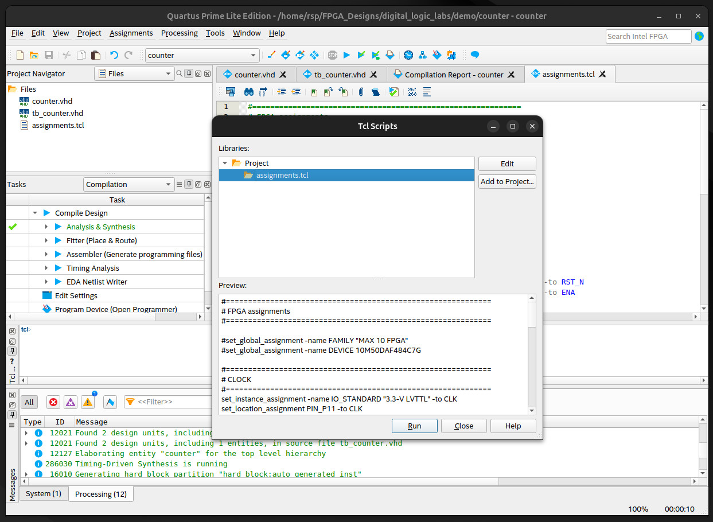
Figure: Select the Tcl script for pin assignments and click the "Run" button.
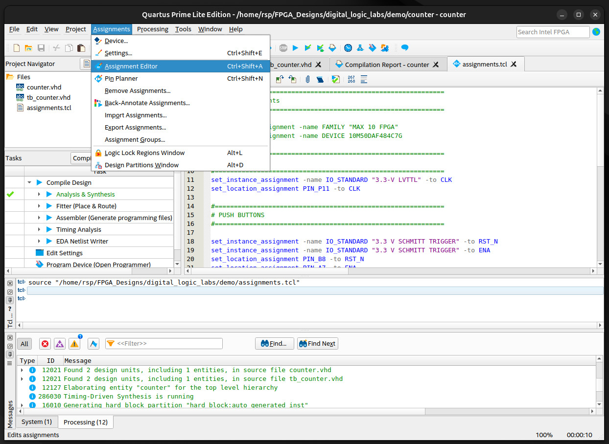
Figure: Open "Assignments > Assignment Editor" to check the pin assignments.

Figure: Open "Assignments > Pin Planner" to view the pin locations on the FPGA device.
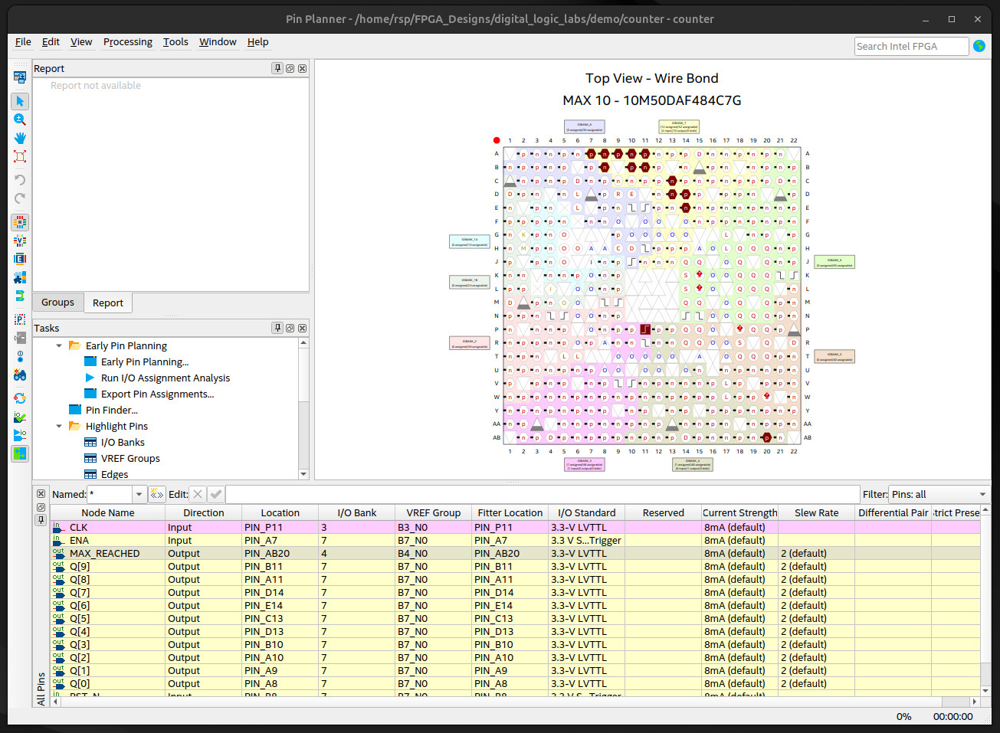
Figure: Re-check the pin assignments in the "Pin Planner" tab.
Full FPGA Compilation Process#
Next, run the full compilation process, which includes the following steps:
- Source Code Analysis and Elaboration
- Logic Synthesis
- Fitter (Logic Mapping and Optimization)
- Place & Route
- Bitstream Generation
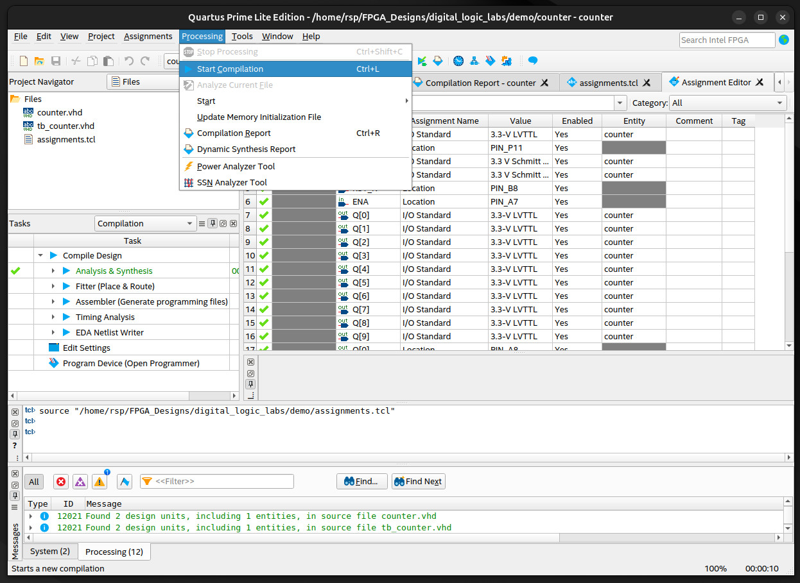
Figure: Select "Processing > Start Compilation" to execute all steps in the FPGA design flow.
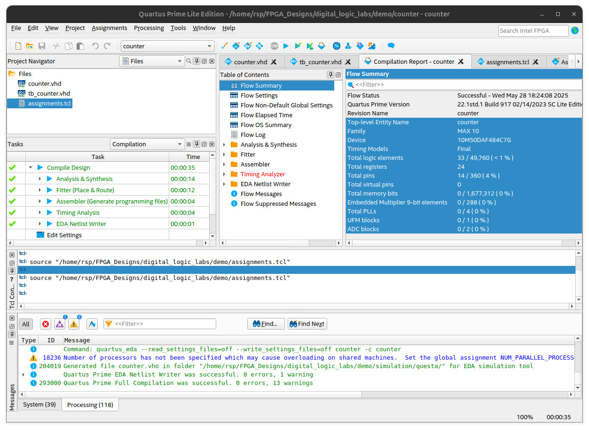
Figure: Compilation result
The "Compilation Result Summary" tab shows key details about the compilation process, such as logic utilization (the number of logic elements), the number of used FPGA pins, memory usage, and more.
Device Programming#
After the bitstream file (.sof) for the Intel / Altera FPGA device has been successfully generated, the final step — Device Programming (or Bitstream Uploading) — can be performed.
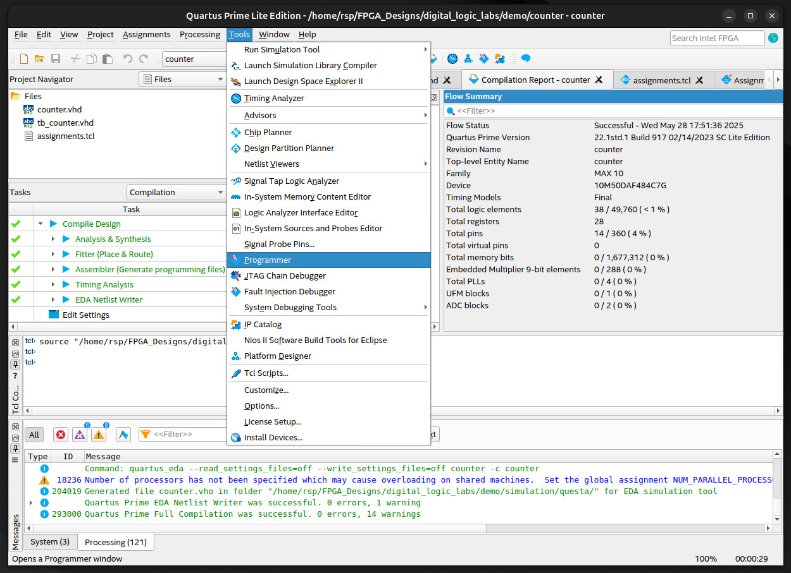
Figure: Connect the FPGA board to the USB port of the computer. Select "Tools > Programmer" to open the Device Programmer.

Figure: Select the bitstream (.sof) from the list and
click the "Start" button to upload it to the FPGA board.

Figure: A green progress bar indicates that the bitstream has been uploaded successfully.

Figure: The status of LEDs on the FPGA board
VHDL Simulation Using Questa Intel Starter Edition#
Quartus Prime Lite does not include a built-in HDL simulator, so you cannot simulate HDL designs directly within Quartus. To perform simulations, you need to use the Questa Intel Starter Edition (or other simulators such as GHDL).
In this tutorial, the Quartus Prime Lite v22.1 is installed
under /opt/intelFPGA_lite/22.1std/ on a Linux / Ubuntu system.
To check the version of the Questa Intel Starter Edition software, run the following command:
$ /opt/intelFPGA_lite/22.1std/questa_fse/bin/vsim -version
To use the software, a license file (.dat) is required.
The following command shows how to set the LM_LICENSE_FILE environment variable
to the location of the license file (e.g. $HOME/.altera.quartus/quartus2_lic.dat).
For Linux users:
$ export LM_LICENSE_FILE="$HOME/.altera.quartus/quartus2_lic.dat"
To launch the Questa Intel Starter Edition directly, run the following command in a Linux terminal (under the project directory):
$ /opt/intelFPGA_lite/22.1std/questa_fse/bin/vsim &
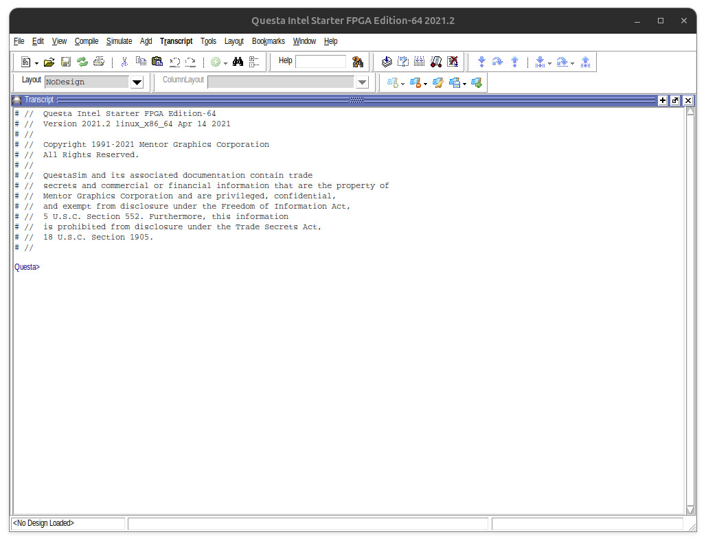
Figure: The main window of Questa Intel Starter Edition
Run the following Tcl commands in the console of the Questa simulator.
# Create a working library.
vlib work
# Compile VHDL code and testbench files.
vcom -2008 ./counter.vhd
vcom -2008 ./tb_counter.vhd
# Start the simulator and load the testbench (work.tb_counter).
vsim -t 1ps -voptargs="+acc" work.tb_counter
# Show waveforms.
view wave
# Add only top-level signals.
add wave *
# Recursively add all signals (all levels).
# add wave -r *
# Run the simulator for 100 usec.
run 100 us
Note:
- A
.doscript file can be used to automate simulator commands, making the process efficient and reproducible. You can save the commands listed above in a file namedsimulation.do. - To apply a
.dofile in QuestaSim, enter the commanddo simulation.doin the Transcript window.
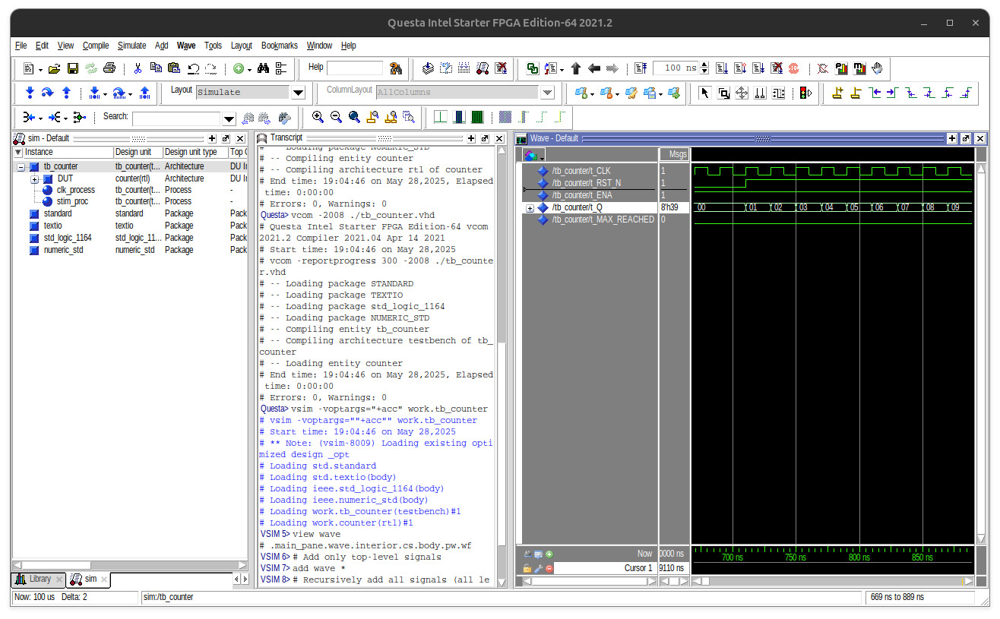
Figure: Waveform window

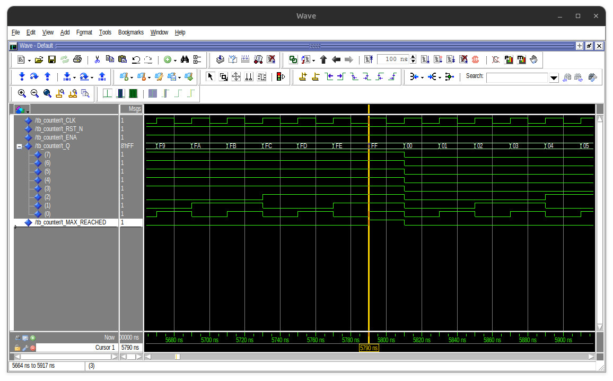
Figure: Undocked Waveform window
The Waveform window is used to visualize signal activity during simulation — i.e., it shows how signals like clocks, resets, and data lines change over time. This is essential for verifying the behavior of an HDL-based design.
It is possible to load only the VHDL design without a testbench and use Tcl commands to apply input stimuli for testing purposes.
# Create a working library.
vlib work
# Compile the VHDL code file.
vcom -2008 ./counter.vhd
# Start the simulator and load the counter module (work.counter)
vsim -voptargs="+acc" work.counter
# Add only top-level signals.
add wave *
# Restart the simulator while keeping the waveforms.
restart -f
# Create the clock signal with a 20 ns period (50 MHz)..
force -repeat 20ns CLK 0 0ns, 1 10ns
# Force the RST_N input to 0 (low).
force RST_N 0
# Force the ENA input to 1 (high).
force ENA 1
# Run the simulator for 200 ns.
run 200 ns
# Force the RST_N input to 1 (high).
force RST_N 1
# Run the simulator for the next 10 µs.
run 10 us
Note:
- It is possible to launch the Questa Intel Starter Edition directly from Quartus Prime Lite. Before using it (via "Tools > Run Simulation Tool > RTL Simulation"), ensure that the license file for the Questa simulator is properly configured and
the environment variable
LM_LICENSE_FILEpoints to the correct license file.
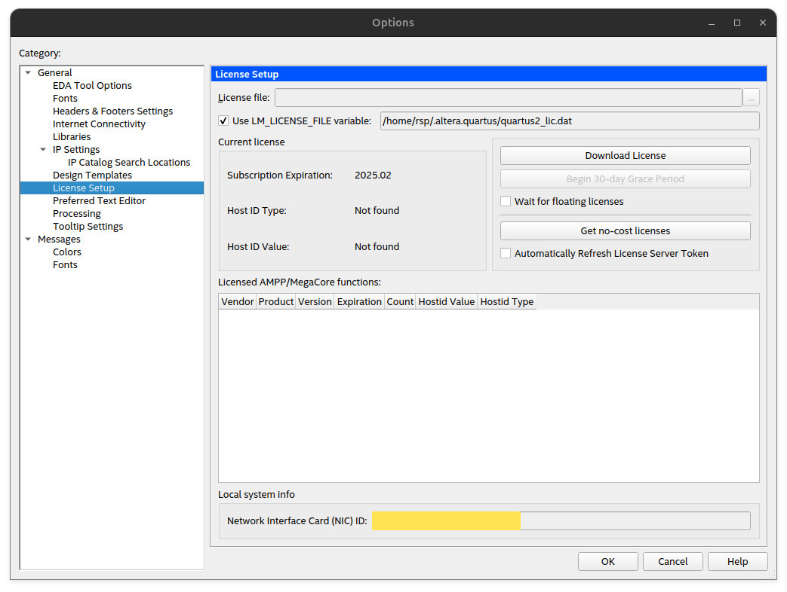
Figure: License file setup for Questa Intel Starter Edition (Linux)

Figure: License file setup for Questa Intel Starter Edition (Windows)

Figure: Questa simulator (launched from Quartus Prime Lite)
Output Signal Measurement#
The MAX_REACHED output signal of the FPGA design is mapped to
the I/O pin at PIN_AB20 (Arduino IO13).
It can be easily measured and observed using a digital oscilloscope.
The pulse width is 20ns (a single cycle) for the clock frequency of 50MHz.

Figure: Measurement of the pulse signal (MAX_REACHED) from
a 24-bit counter
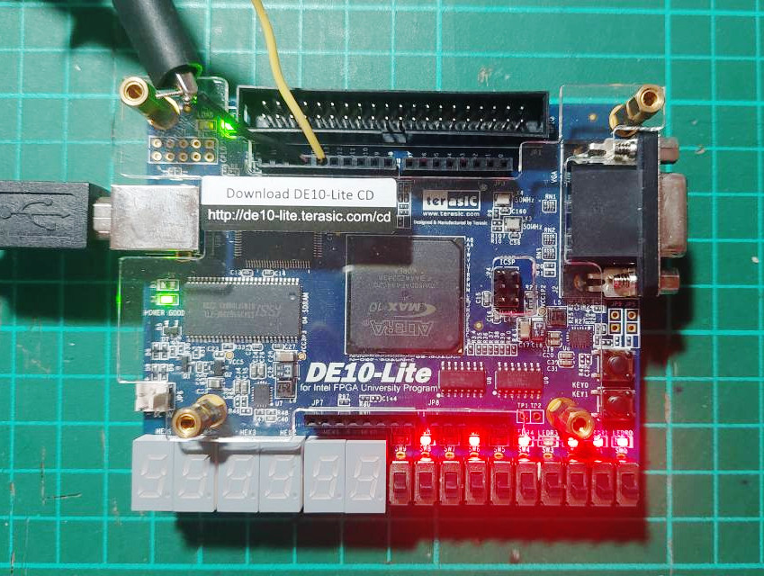
Figure: Measurement of the pulse signal using an oscilloscope probe
If the bit width (N) is reduced from 24 to 16 bits,
then after recompilation and bitstream upload,
the MAX_REACHED signal appears as a periodic waveform on the oscilloscope screen.
The pulse on the MAX_REACHED occurs every 1.31 msec (= )
or 762.9Hz.
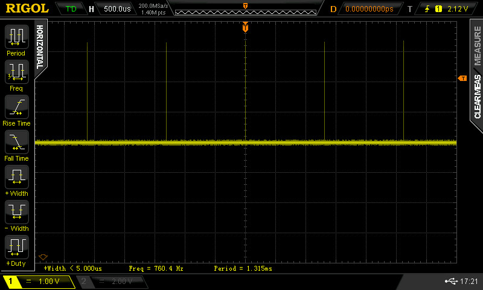
Figure: Measurement of the frequency and period of the pulse signal from a 16-bit counter.
This work is licensed under a Creative Commons Attribution-ShareAlike 4.0 International License.
Created: 2025-05-28 | Last Updated: 2025-05-30